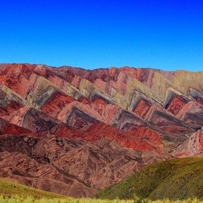

EL HORNOCAL
A unos 4.300 metros de altura y dentro del area declarada patrimonio de la humanidad en la quebrada de humahuaca, es una combinacion entre los mas conocidos cerro de los siete colores de purmamarca y la paleta de pintor de maimara. De uno tiene la impresionante variedad de colores (hay quienes ven hasta 33 tonalidades), de otro la pincelada marcada en forma de V invertida, esta formacion de millones de años de antiguedad es un destino obligado de nuestro norte Argetino!